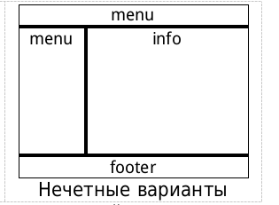
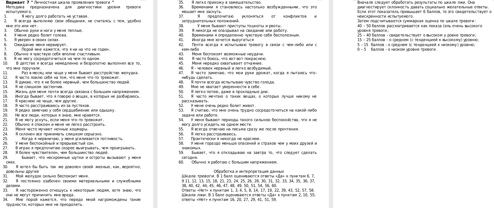

Лабораторная работа №6
Гуценков Никита. Вариант 7
В соответствии с вариантом, создать макет сайта заданной структуры. Для оформления и позиционирования содержимого страницы использовать CSS.
Макет страницы выполняется шириной – 800px, с выравниванием – по центру и содержит следующие основные блоки:
1.header – заголовок сайта, содержит логотип (изображение) и название;
2.menu – меню навигации (ссылки на задания 1 – 3);
3.info – основной раздел в котором располагается все информативная часть сайта;
4.footer – содержит ФИО студента, группу, дату создания, емайл и др.
Разрабатываемая WEB – страница, должна иметь следующую структуру:
1.Один HTML документ;
2.CSS файл (папка CSS);
3.Файл или файлы со скриптами (папка JS).
Все изменения вида и содержимого страницы, производятся динамически с помощью JavaScript, без загрузки других HTML документов (при необходимости они могут создаваться только динамически).

После загрузки страницы пользователю предлагается пройти регистрацию, для чего он должен заполнить следующие поля формы:
1.Фамилия – поле ввода;
2.Имя – поле ввода;
3.Пол – четные варианты список, не четные переключатель;
4.Возраст – поле ввода;
5.Логин – поле ввода;
6.Пароль – поле ввода с скрытием данных;
7.Е – майл;
8.Добавить 2 своих поля.
Форма должна содержать кнопки «Регистрация» и «Очистка полей». По нажатию на кнопку «Регистрация», необходимо проверить:
1.заполнение всех полей формы (обязательно для всех студентов);
2.валидность введенных данных (слабым можно не делать).
Пользователю необходимо сообщить, какие поля заполнены не верно или о успешном прохождении регистрации. Доступ к остальным элементам WEB-страницы, только после прохождения регистрации. Введенная информация сохраняется для дальнейшего использования.
После прохождения регистрации, форма скрывается. На странице выводится описание теста с предложением пройти его. В соответствии с вариантом (см. приложение), необходимо реализовать прохождение теста. Вопросы задаются последовательно. Для каждого вопроса динамически формируется новое окно (не диалоговое), в котором с помощью элементов форм – поле ввода, список, переключатель, выбирается вариант ответа. Также окно должно содержать кнопки «Следующий вопрос» и «Отмена». При нажатии на кнопку «Отмена» тест прекращается (возобновление только с начала).
После прохождения теста, заголовок теста скрывается, и выводятся данные о тестируемом, результат прохождения теста и время затраченное на его прохождение.
